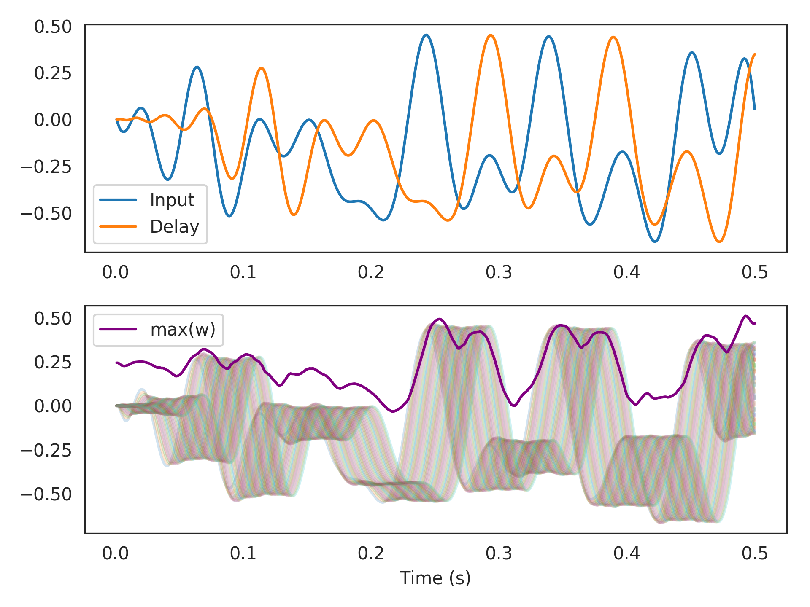
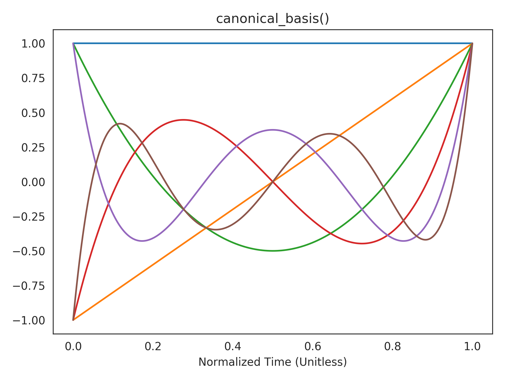
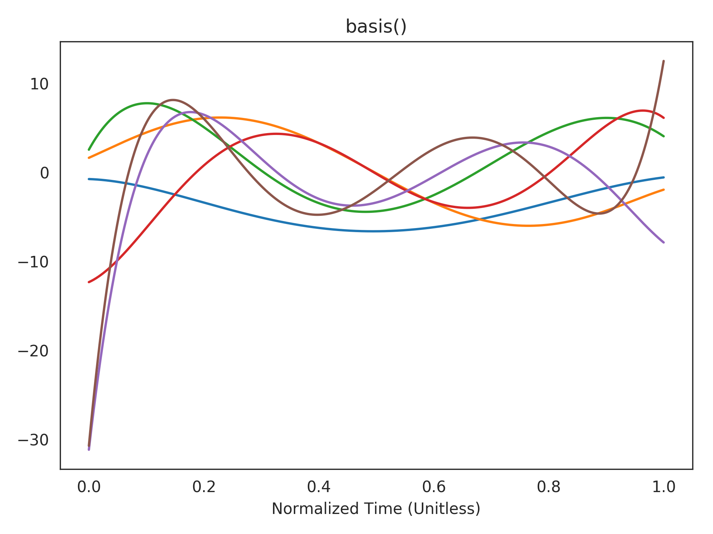
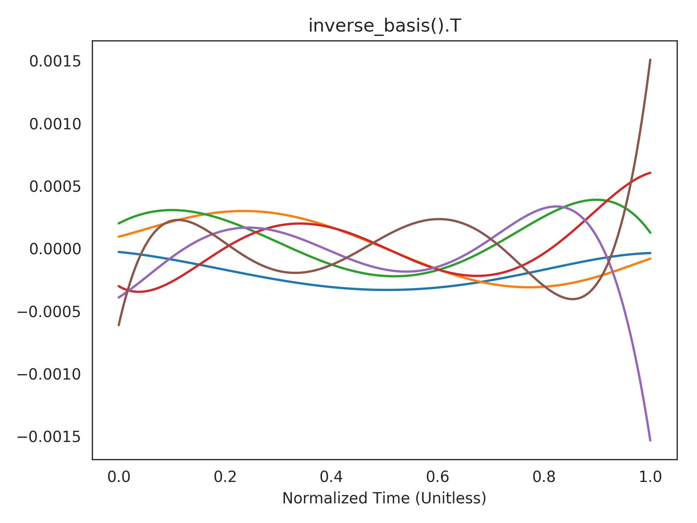

nengolib.networks.RollingWindow¶
-
class
nengolib.networks.RollingWindow(theta, n_neurons, process, dimensions=6, synapse=0.1, input_synapse=0.1, dt=0.001, realizer=Balanced(), solver=LstsqL2(reg=0.001, solver=Cholesky(transpose=None), weights=False), **kwargs)[source]¶ Approximate nonlinear functions across a rolling window of input.
Compresses the input history of finite length into a low-dimensional state to support the approximation of nonlinear functions across a rolling window of input history. This can be used to approximate FIR filters and window functions in continuous time.
Parameters: theta :
floatWidth of rolling window (time-delay) in seconds.
n_neurons :
integerTotal number of neurons to use in
nengo.Ensemble.process :
nengo.ProcessProcess modelling a typical input to the network. Used to optimize the lengths of axis-aligned
encodersand the distribution ofeval_points. IfNone, then will use the defaults of uniform unit-lengthencodersand uniformly distributedeval_points, which usually gives sub-optimal performance.dimensions :
integer, optionalOrder of
PadeDelay(), or dimensionality of the state vector. Defaults to6, which has an approximation error of less than one percent for input frequencies less than1/theta(seepade_delay_error()).dt :
float, optionalSimulation time-step (in seconds), passed to
LinearNetwork. Defaults to0.001, but should be manually specified if the simulation time-step is ever changed.synapse :
nengo.synapses.Synapse, optionalRecurrent synapse. Bigger is typically better. Defaults to
0.1.input_synapse :
nengo.synapses.Synapse, optionalInput synapse. Typically should match the value of
synapse, unless the input has already been filtered by the same synapse. Defaults to0.1.realizer :
AbstractRealizer, optionalMethod of realizing the linear system. Defaults to
Balanced.solver :
nengo.solvers.Solver, optionalSolver to use for connections from the state ensemble. Defaults to
nengo.solvers.LstsqL2(withreg=1e-3).**kwargs :
dictionary, optionalAdditional keyword arguments passed to
LinearNetwork. Those that fall under the heading of**ens_kwargswill be passed to thenengo.Ensemblethat represents thestate.See also
LinearNetwork,PadeDelay(),pade_delay_error(),Balanced,EvalPoints,EncodersNotes
This extends
LinearNetworkto efficiently implement thePadeDelay()system (viaBalanced,EvalPoints, andEncoders), with support for decoding nonlinear functions from the state of the network. [1]Function are decoded from the window by evaluating the state-space at arbitrary points (as usual in Nengo), and linearly projecting them onto basis functions to express each point as a sampled window representation. See
add_output()for details.References
[1] A. R. Voelker and C. Eliasmith, “Improving spiking dynamical networks: Accurate delays, higher-order synapses, and time cells”, Neural Computation (preprint), accepted 09 2017. [URL] Examples
See notebooks/examples/rolling_window.ipynb for a notebook example.
>>> from nengolib.networks import RollingWindow, t_default
Approximate the maximum of a window of width 50 ms, as well as a sampling of the window itself. The
Hankelrealizer happens to be better than the default ofBalancedfor computing themaxfunction.>>> import nengo >>> from nengolib import Network >>> from nengolib.signal import Hankel >>> with Network() as model: >>> process = nengo.processes.WhiteSignal(100., high=25, y0=0) >>> stim = nengo.Node(output=process) >>> rw = RollingWindow(theta=.05, n_neurons=2500, process=process, >>> neuron_type=nengo.LIFRate(), >>> realizer=Hankel()) >>> nengo.Connection(stim, rw.input, synapse=None) >>> p_stim = nengo.Probe(stim) >>> p_delay = nengo.Probe(rw.output) >>> p_max = nengo.Probe(rw.add_output(function=np.max)) >>> p_window = nengo.Probe(rw.add_output(function=lambda w: w[::20])) >>> with nengo.Simulator(model, seed=0) as sim: >>> sim.run(.5)
>>> import matplotlib.pyplot as plt >>> plt.subplot(211) >>> plt.plot(sim.trange(), sim.data[p_stim], label="Input") >>> plt.plot(sim.trange(), sim.data[p_delay], label="Delay") >>> plt.legend() >>> plt.subplot(212) >>> plt.plot(sim.trange(), sim.data[p_window], alpha=.2) >>> plt.plot(sim.trange(), sim.data[p_max], c='purple', label="max(w)") >>> plt.legend() >>> plt.xlabel("Time (s)") >>> plt.show()
Visualizing the canonical basis functions. The state of the
PadeDelay()system takes a linear combination of these to represent the current window of history:>>> plt.title("canonical_basis()") >>> plt.plot(t_default, rw.canonical_basis()) >>> plt.xlabel("Normalized Time (Unitless)") >>> plt.show()
Visualizing the realized basis functions. This is a linear transformation of the above basis functions according to the realized state-space (see
realizerparameter). The state of the network takes a linear combination of these to represent the current window of history:>>> plt.title("basis()") >>> plt.plot(t_default, rw.basis()) >>> plt.xlabel("Normalized Time (Unitless)") >>> plt.show()
Visualizing the inverse basis functions. The functions that can be accurately decoded are expressed in terms of the dot-product of the window with these functions (see
add_output()for mathematical details).>>> plt.title("inverse_basis().T") >>> plt.plot(t_default, rw.inverse_basis().T) >>> plt.xlabel("Normalized Time (Unitless)") >>> plt.show()
Attributes
AAstate-space matrix of mappedLinearSystem.BBstate-space matrix of mappedLinearSystem.CCstate-space matrix of mappedLinearSystem.DDstate-space matrix of mappedLinearSystem.all_connections(list) All connections in this network and its subnetworks. all_ensembles(list) All ensembles in this network and its subnetworks. all_networks(list) All networks in this network and its subnetworks. all_nodes(list) All nodes in this network and its subnetworks. all_objects(list) All objects in this network and its subnetworks. all_probes(list) All probes in this network and its subnetworks. config(.Config) Configuration for this network. inputNengo object representing the input u(t)to the system.mappedMapped LinearSystem.n_neurons(int) Number of neurons in this network, including subnetworks. outputNengo object representing the output y(t)of the system.realizationRealized LinearSystem.realizer_resultThe RealizerResultproduced byrealizer.size_inInput dimensionality. size_outOutput dimensionality. size_stateState dimensionality. stateNengo object representing the state x(t)of the system.Methods
add(obj)Add the passed object to Network.context.add_output([t, function, label, synapse])Decodes a function of the window at time points -t*theta.basis([t])Temporal basis functions for realized PadeDelay. canonical_basis([t])Temporal basis functions for PadeDelay in canonical form. copy([add_to_container])default_config()Constructs a ~.Config object for setting defaults. inverse_basis([t])Moore-Penrose pseudoinverse of the basis functions. -
add_output(t=None, function=<function RollingWindow.<lambda>>, label='output', synapse=None, **conn_kwargs)[source]¶ Decodes a function of the window at time points
-t*theta.Parameters: t :
array_like, optionalA scalar or array-like with elements ranging between
0(beginning of window) and1(end of window; i.e.,theta). Specifies the time-points at which to sample the window’s basis functions. Defaults to the value oft_default:1000points spaced evenly between0and1.function :
callable, optionalA function that consumes some window
wof requested time-points (len(w) == len(t)), and returns the desired decoding. Defaults to returning the end of the window:w[-1].label :
string, optionalLabel for the created
nengo.Node. Defaults to'output'.synapse :
nengo.synapses.Synapse, optionalSynapse passed to created
nengo.Connection. Defaults toNone.**conn_kwargs :
dictionary, optionalAdditional keyword arguments passed to
nengo.Connection.Returns: Node object that holds the decoded function from the state ensemble. The size of the node is equal to the output dimensionality of the provided function.
Notes
The approach is to project the state-vector onto the basis functions given by the rows of
basis(), and then supply the resulting window representation to the givenfunction. Then we solve for the decoders with respect to the state-vector as usual in Nengo.Disregarding the linear change of basis from the
realizer, thecanonical_basis()functions are polynomials of increasing order (from0up toq-1, whereq=dimensions):\[\begin{split}P_i(t) = \begin{pmatrix}q \\ i\end{pmatrix}^{-1} \sum_{j=0}^i \begin{pmatrix}q \\ j\end{pmatrix} \begin{pmatrix}2q - 1 - j \\ i - j\end{pmatrix} \left( -t \right)^{i - j} \text{,} \quad 0 \le t \le 1 \text{,} \quad i = 0 \ldots q - 1 \text{.}\end{split}\]Since the encoders are axis-aligned (when a
processis given), the functions that can be accurately decoded by this approach are of the form:\[f({\bf w}) = \sum_{i=0}^{q-1} f_i ({\bf v}_i \cdot {\bf w})\]where \({\bf w}\) is some history, \({\bf v}_i\) are the columns of
inverse_basis(), and each \(f_i\) is some unknown low-degree nonlinearity.
-